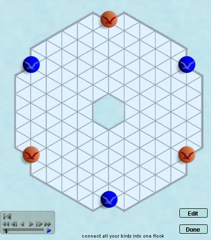

Hex
|
|
Trax |
| Register |
Log in and Play |
Guest Login |
Volo
Volo is a connection game inspired by the movement of flocks
of birds. It plays somewhat like Hex, but with limited
rearrangement of the pieces allowed; and elements of Lines
of Action mixed in. The rules
are pretty simple - you either add a new "bird" or move a
line of birds in a way that enlarges the flock without
splitting it. |
 |
| Volo
rankings at Boardspace |
Volo at
BoardGameGeek |
| Volo game archives at
Boardspace |
Volo official home page |
| Volo
win/loss database |
|
|
Site Map |
Go to BoardSpace.net home page |